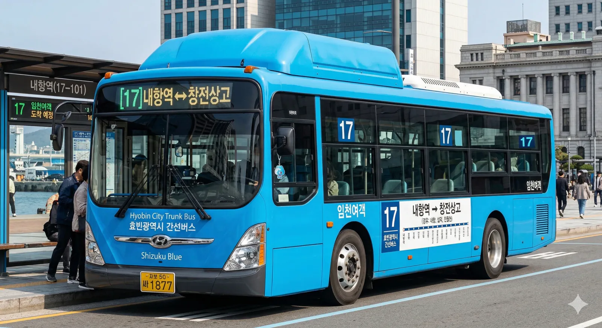

분류: 효빈광역시의 간선버스 | 효빈광역시의 교통

|
효빈광역시
간선버스
|
1. 노선 정보
|
 |
| 내항역을 출발하는 17번 버스 |
| 🚌 효빈 버스 17 | |||||
| 기점 | 효빈광역시 중구 내항동 (내항역) |
종점 | 효빈광역시 창전구 마시동 (창전상고) |
||
| 종점행 | 첫차 | 04:32 | 기점행 | 첫차 | 04:32 |
| 막차 | 23:12 | 막차 | 23:10 | ||
| 배차간격 | 평일 11~15분 / 주말 16~19분 | ||||
| 운수사명 | 임천여객 | 인가대수 | 12대 | ||
| 노선 | 내항역 - 내항동 - 십덕 - 진월천 - 오주 - 청엽구청 - 아논타워 - 칠심 - 창전구청 - 창전상고 | ||||
| 🚌 효빈 버스 71 | |||||
| 기점 | 효빈광역시 창전구 마시동 (창전상고) |
종점 | 효빈광역시 중구 내항동 (내항역) |
||
| 종점행 | 첫차 | 04:49 | 기점행 | 첫차 | 04:49 |
| 막차 | 23:17 | 막차 | 23:10 | ||
| 배차간격 | 평일 11~15분 (17번과 연계 운행) | ||||
| 노선 | 창전상고 - 창전구청 - 칠심 - 아논타워 - 청엽구청 - 오주 - 진월천 - 십덕 - 내항동 - 내항역 | ||||
| * 볼드체로 표시된 구간은 주요 경유지 및 환승 거점입니다. | |||||
2. 개요
효빈광역시의 1권역(중구 내항)과 7권역(창전구 마시동)을 잇는 간선버스 노선이다. 중구의 구도심과 청엽구, 창전구의 행정 및 교육 중심지를 연결하는 알짜배기 노선이다.
3. 정류장 목록
4. 특징
- 행정타운 연결: 청엽구청과 창전구청을 모두 경유하여 민원 처리를 위해 이동하는 시민들의 이용률이 높다.
- 통학 노선: 창전상고를 비롯하여 노선 인근에 학교가 많아 등하교 시간대에는 학생들이 많이 탑승한다.
- 구도심 연계: 내항 지역과 신시가지를 연결하는 주요 노선 중 하나로, 주말에는 나들이객 수요도 있다.
5. 시간표
6. 여담
- 아논타워 정류장은 출퇴근 시간에 매우 혼잡하므로 승하차 시 주의해야 한다.
- 청엽구청 구간에서는 일부 노면전차(7호선)와 경로가 겹쳐 경쟁 관계에 있다.